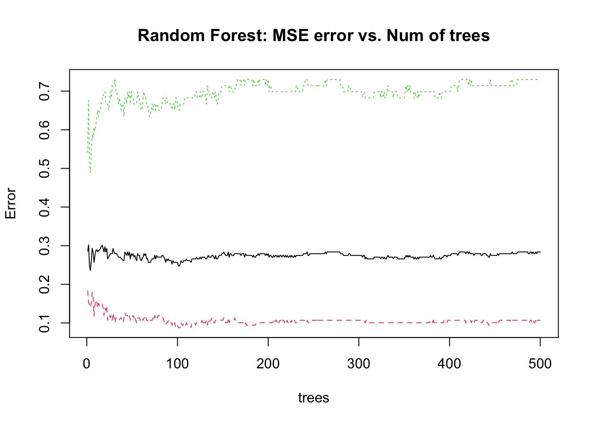
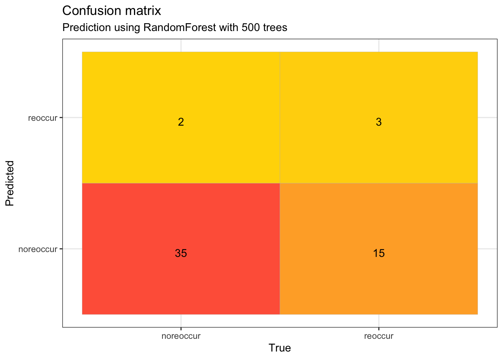
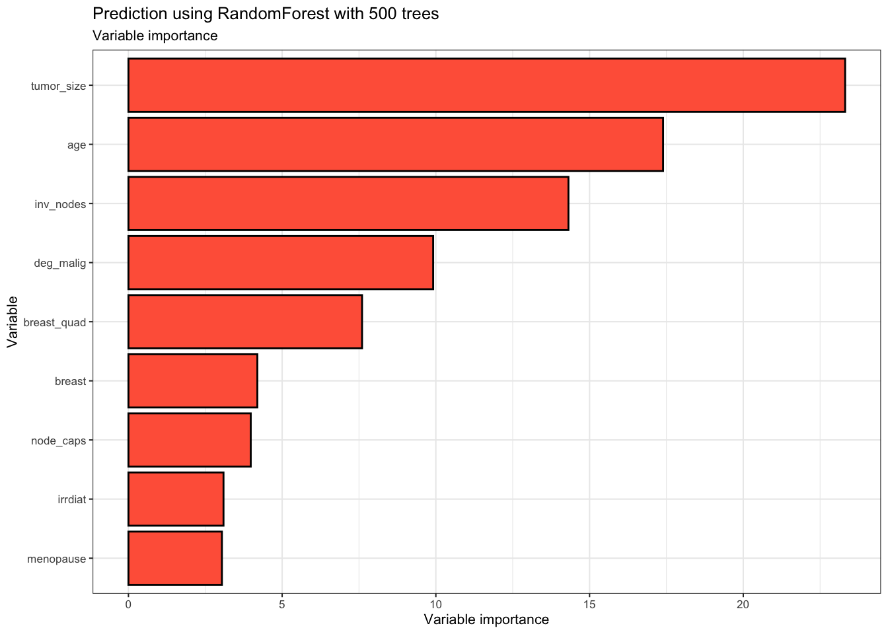
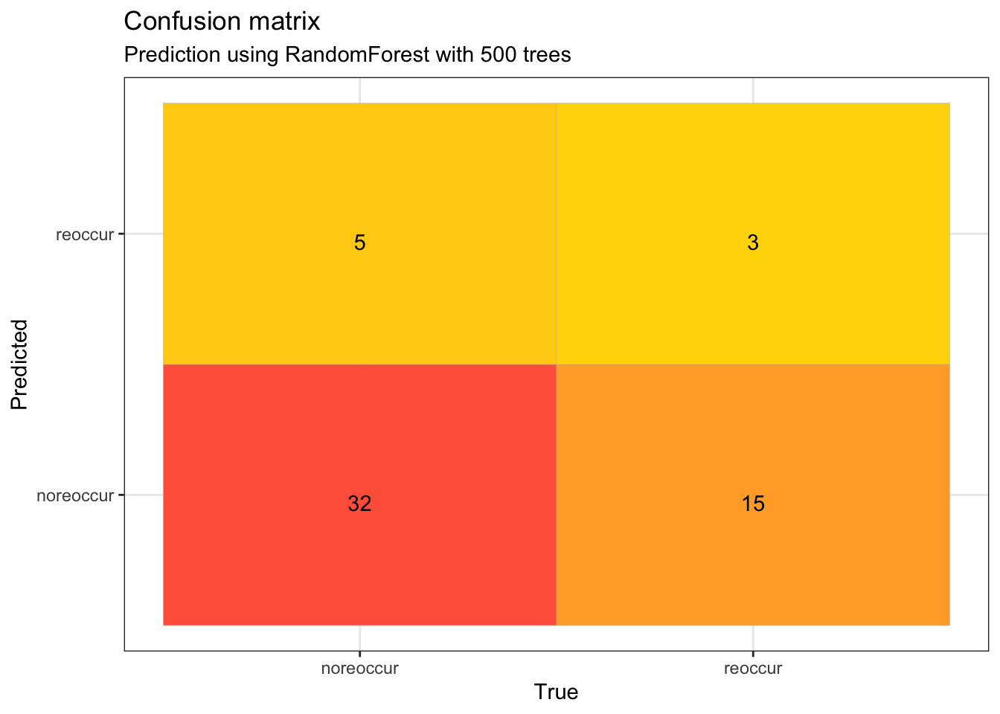
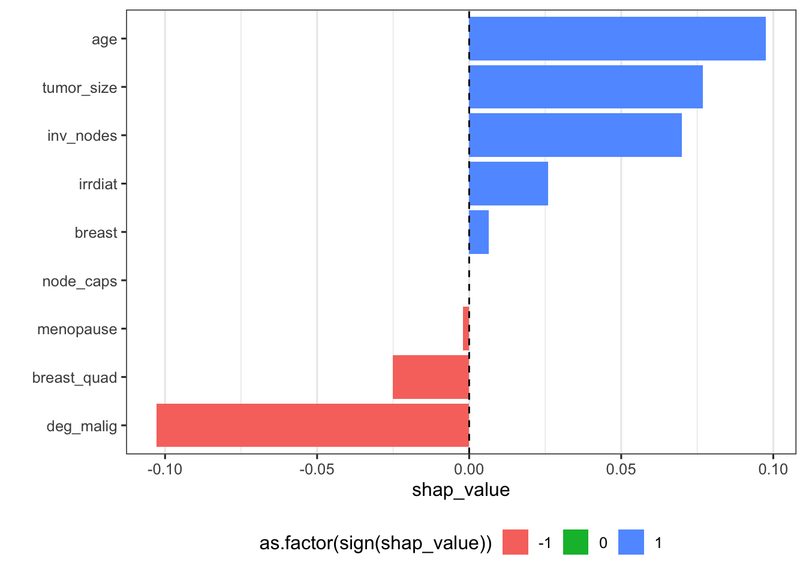
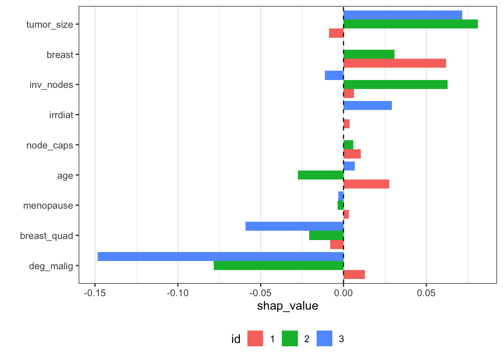
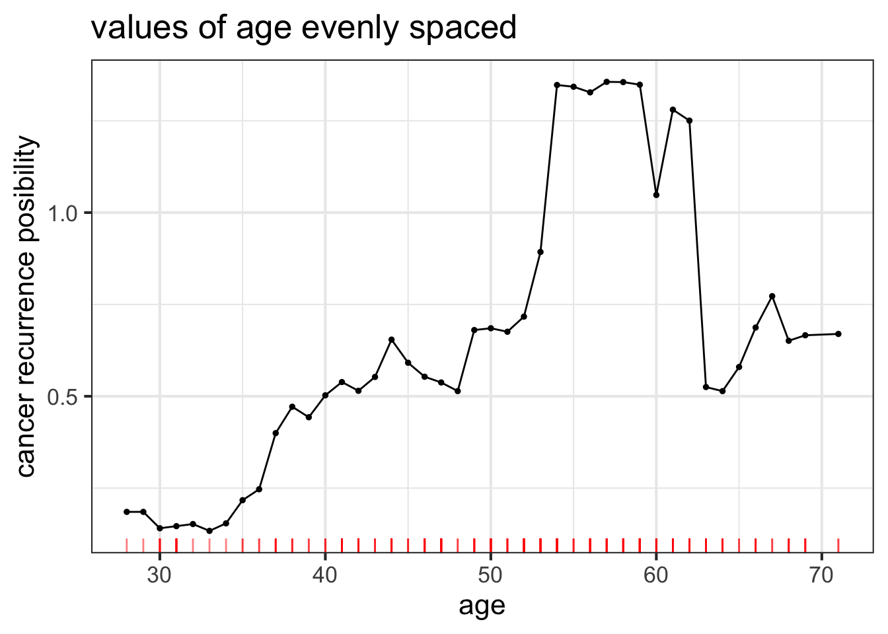
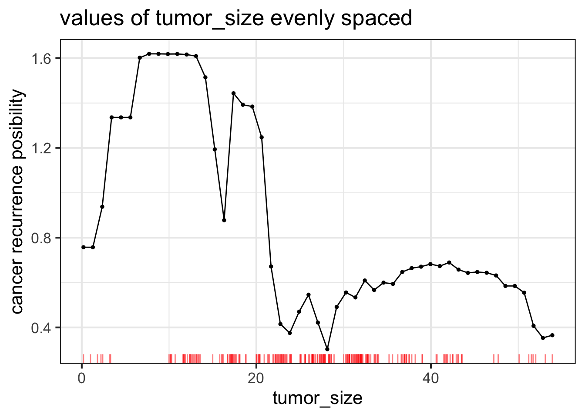

Chapter 4 Random Forest
4.1 General Random Forest Model
The third model we are going to use is the Random Forest.
We first build Random Forest model based on all the variables and the train_dataset: test_dataset = 8:2.
Let’s first see the error evolution vs. number of trees of the general model:

Where we can see the general trend of the error in model is decreasing, and next we would use the test dataset to obtain the confusion matrix and AUC value of the model to evaluate the performance of the model:
## [1] "Area under curve (AUC) : 0.556"Above is the AUC value of the random forest model, where we can say is not ideal, and the value 0.556 mostly means the model is random somehow, next we would focus on the confusion matrix to tee the specific predicting situation:

We can conclude from the confusion matrix that the model still has a preference to predict class reoccur as class noreoccur, more specifically, in predictions, there are 50 samples to be considered as class noreoccur and only 5 samples to be considered as class reoccur.If we want to answer what has lead to this result, we may need to study the features.
We focus on the importance of different features: 
As we can see from the figure above, features tumor_size,age,inv_nodes,deg_malig still are the main contributing factors.
4.2 Reduced Random Forest Model
So does this mean if we remove the less influential features and build the model (which means we use the same features like that in model1 and model2) on them would have a better model performance? in other words, we want to know that whether removing these less influential features can reduce the model tendency of predicting samples as class noreoccur.
We rebuild the random forest model and see the AUC value and the confusion matrix,
## [1] "Area under curve (AUC) : 0.516"
Still, though we have more predictions of class reoccur, the model has a preference to predict class reoccur as class noreoccur.
4.3 Shapley Values
For the preference of the model, here we discuss the Shapley values to study how to fairly distribute the “payout” among features.
4.3.1 SHAP plot with one instance
We first plot the Shapley values for one instance,
 Let’s check the prediction of the sample:
## [1] 0.824We can see the model consider the sample has a probability of 82.4% to be class noreoccur , and take a perspective of all the features, the general trend is that most features make more contributions in predicting class noreoccur, that’s very important for us to explain why the model prefer to predict the samples as class noreoccur. Especially for the feature tumor_size, age and inv_nodes, which are the three most important features for the model, they all have a huge magnitude of the SHAP values and this indicates their strength of the contribution to predict sample as class noreoccur, that’s very important for us to explain why the model think the sample is highly possible to be class noreoccur.
4.3.2 SHAP plot with more instances
To study the effect of features deeper, we start to plot the Shapley values for more instances (we use the same instance with previous part),

Here we take class noreoccur as the positive reference. Surprisingly, many factors like deg_malig, tumor_size,inv_nodes and age are both contributed a lot to the predictions of both classes. Their huge magnitude of the SHAP values indicates their strength of the contribution which is consistent with the conclusion made previously that they are four most important features of the model.
Also, we can see many features don’t have stable performance in SHAP values. Especially,for features age, we can see the shap values of two samples are totally opposite, and both values are quite large which indicates its large contributions to predictions to both classes. Its magnitude of the SHAP values in both negative and positive side indicates their poor difference in sample distribution among 2 classes. We have scatterplot the distribution of each feature among classes, and indeed, all these features have similar distribution in classes.
As for the prediction preference of the model, take a perspective of all the features, the general trend is that most features make more contributions in predicting class noreoccur, the several most important features like tumor_size and inv_nodes, it makes more contributions in predicting class noreoccur , for feature age and deg_malig, they probably make more contributions in predicting class reoccur while with a small gap in contributions make to another class. And this is very important for us to explain why the model prefer to predict the samples as class noreoccur.
4.4 Partial Dependecy
To verify why different features have such shap value performance, here we study the marginal effect of the one selected numeric feature age and tumor_size by using partial dependency plots.

From the PDPs above, first for feature age, the general trend is that the breast cancer recurrence possibility is increasing as age increases. and around age of 60, the risk is at the peak. And when people are old than 60, however the risk is decreasing sharply. it’s easy for us to interpret the increasing risks as age grow, for the human would have a more vulnerable immune system at an older age, while it’s strange to see lower risk around age 70.
As for the feature tumor_size, we can see generally, smaller tumor_size leads to a higher risk of breast cancer recurrence, while there are still some fluctuations. And we interpret the trend like, the smaller tumor means more room and potential to grow, leading to a higher chance of breast cancer recurrence.